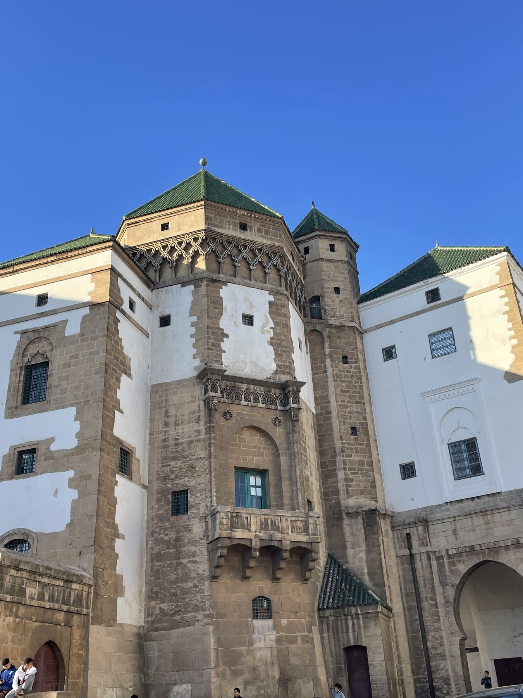

Licensed multilingual guiding
Guided visits are designed to explain Moroccan history, architecture, culture, and daily life clearly.
About Morocco Coco Travel
Morocco Coco Travel helps travelers discover Casablanca and Morocco with licensed guiding, local knowledge, comfortable planning, and flexible private service.

Local knowledge
Morocco Coco Travel is a Casablanca-based travel provider offering private guided tours, cultural experiences, and transport services across Casablanca and Morocco.
The service is led by a licensed multilingual guide with over 15 years of experience. Travelers can expect clear communication, safe and comfortable service, flexible planning, and practical local insight into Casablanca, Rabat, and Moroccan culture.
The focus is simple: help visitors experience Morocco with confidence, respect, and a personal local connection.
Service values
Guided visits are designed to explain Moroccan history, architecture, culture, and daily life clearly.
Experiences can be adapted around pickup location, timing, pace, and traveler interests.
Transport services help travelers move comfortably between hotels, landmarks, city areas, and day-trip destinations.
Plan with a local expert